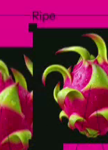
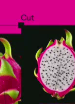
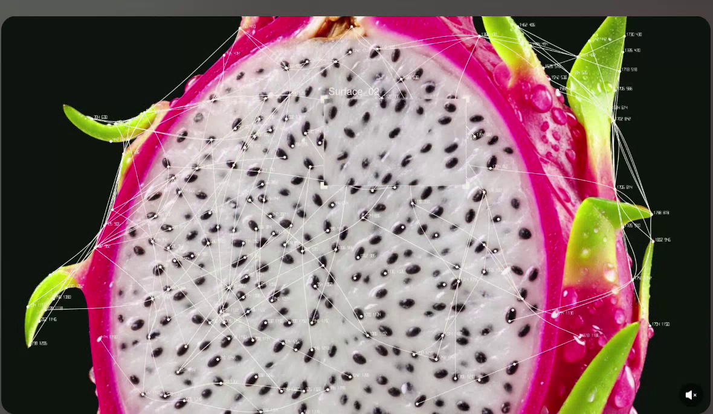
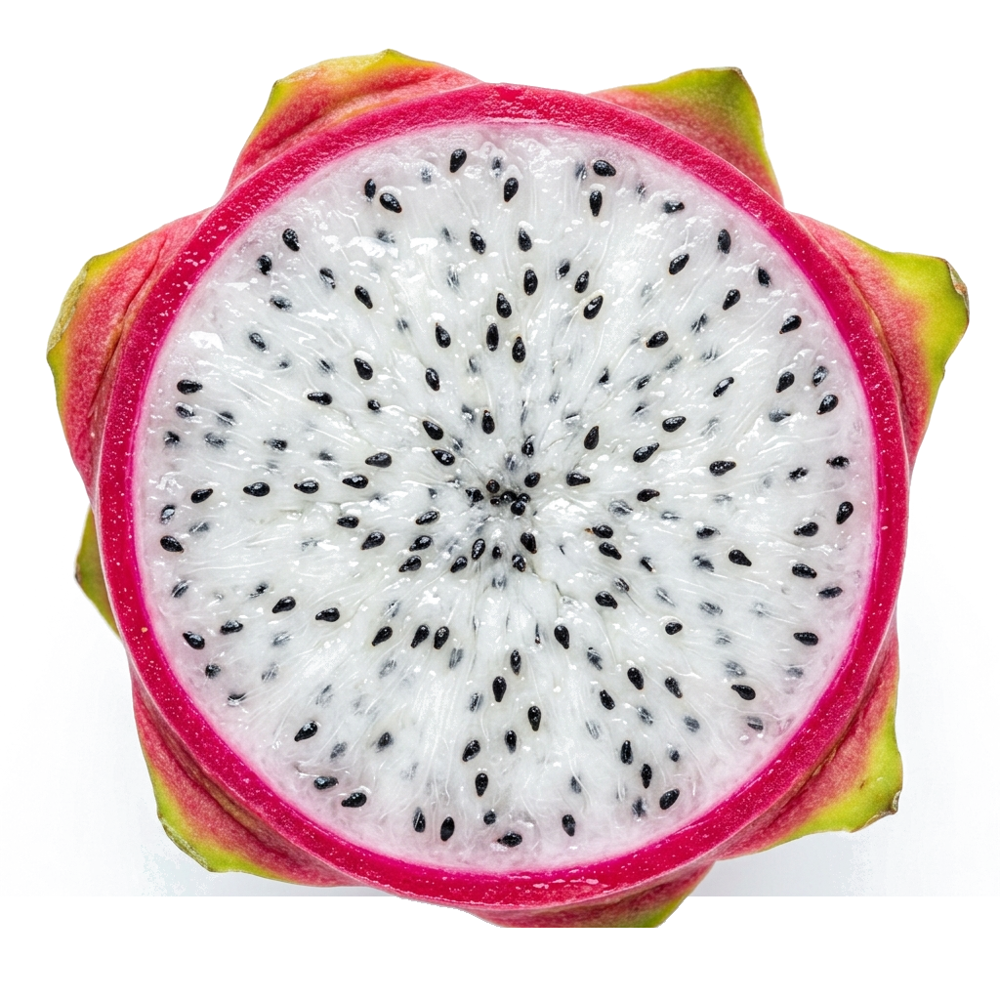

Bud
Opening
Ripe

Cut

IN
OUT
INSIDE OUT

720 480
880 600
1120 520
1280 700
980 780
650 720
1450 550
Surface_01
Surface_02
Surface_03
Surface_04
LIVING
TEXTURE

PITAYA
/ SPECIMEN_01
SPECIMEN: PITAYA-01
TYPE: DRAGON FRUIT
STATE: FRESH / CUT
RIND: PINK / GREEN
PALETTE: PINK / LIME
SURFACE: ORGANIC
CAPTURE: FRONT STUDY
Bud
Young
Opening
Ripe
Cut